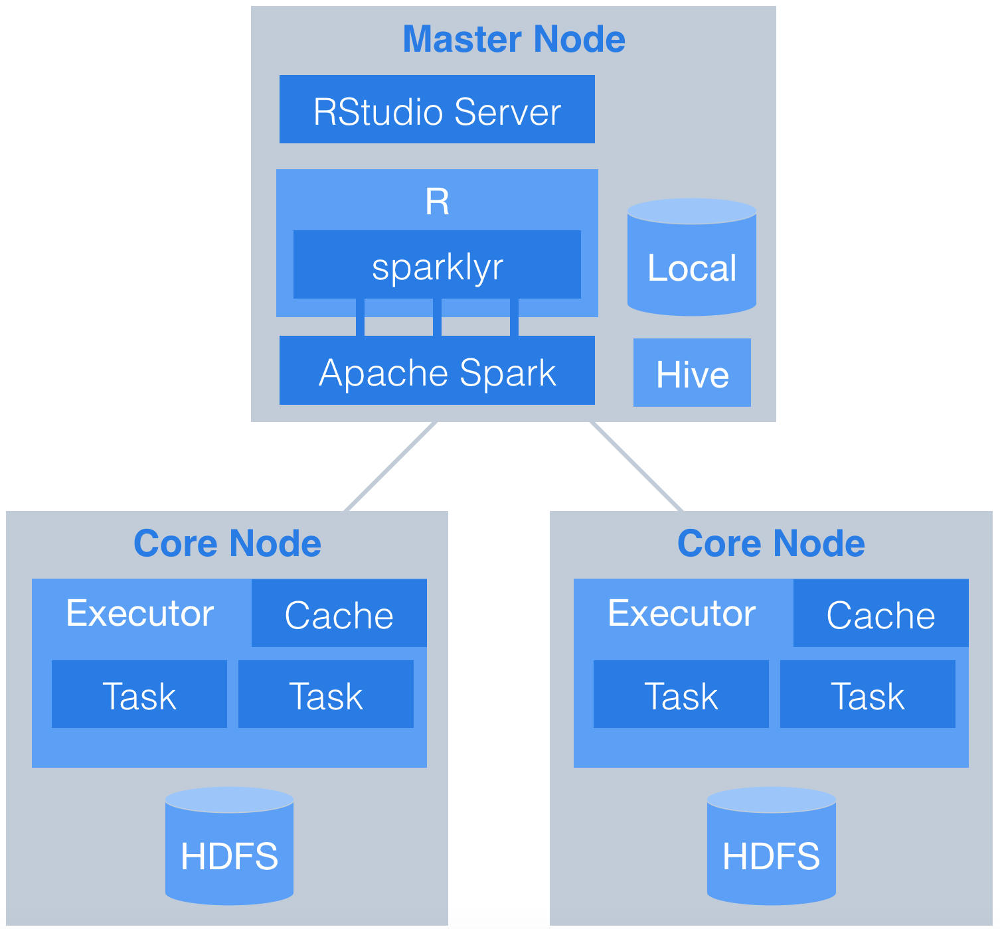
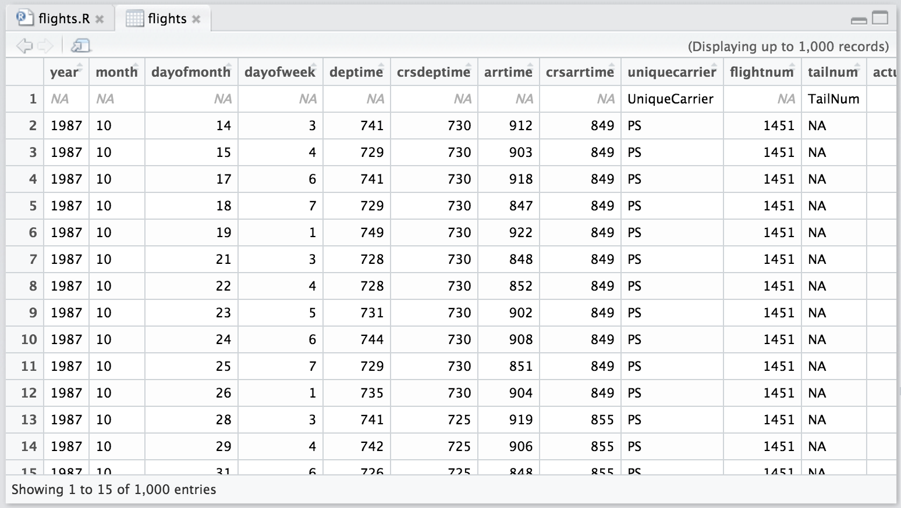

Using sparklyr with an Apache Spark cluster
This document demonstrates how to use sparklyr with an Apache Spark cluster. Data are downloaded from the web and stored in Hive tables on HDFS across multiple worker nodes. RStudio Server is installed on the master node and orchestrates the analysis in spark. Here is the basic workflow.

Data preparation
Set up the cluster
This demonstration uses Amazon Web Services (AWS), but it could just as easily use Microsot, Google, or any other provider. We will use Elastic Map Reduce (EMR) to easily set up a cluster with two core nodes and one master node. Nodes use virtual servers from the Elastic Compute Cloud (EC2). Note: There is no free tier for EMR, charges will apply.
Before beginning this setup we assume you have:
- Familiarity with and access to an AWS account
- Familiarity with basic linux commands
- Sudo privileges in order to install software from the command line

Build an EMR cluster
Before beginning the EMR wizard setup, make sure you create the following in AWS:
- An AWS key pair (.pem key) so you can SSH into the EC2 master node
- A security group that gives you access to port 22 on your IP and port 8787 from anywhere

Step 1: Select software
Make sure to select Hive and Spark as part of the install. Note that by choosing Spark, R will also be installed on the master node as part of the distribution.


Connect to EMR
The cluster page will give you details about your EMR cluster and instructions on connecting.

Connect to the master node via SSH using your key pair. Once you connect you will see the EMR welcome.
# Log in to master node
ssh -i ~/spark-demo.pem hadoop@ec2-52-10-102-11.us-west-2.compute.amazonaws.com
Install RStudio Server
EMR uses Amazon Linux which is based on Centos. Update your master node and install dependencies that will be used by R packages.
# Update
sudo yum update
sudo yum install libcurl-devel openssl-devel # used for devtoolsThe installation of RStudio Server is easy. Download the preview version of RStudio and install on the master node.
# Install RStudio Server
wget -P /tmp https://s3.amazonaws.com/rstudio-dailybuilds/rstudio-server-rhel-0.99.1266-x86_64.rpm
sudo yum install --nogpgcheck /tmp/rstudio-server-rhel-0.99.1266-x86_64.rpmCreate a User
Create a user called rstudio-user that will perform the data analysis. Create a user directory for rstudio-user on HDFS with the hadoop fs command.
# Make User
sudo useradd -m rstudio-user
sudo passwd rstudio-user
# Create new directory in hdfs
hadoop fs -mkdir /user/rstudio-user
hadoop fs -chmod 777 /user/rstudio-userDownload flights data
The flights data is a well known data source representing 123 million flights over 22 years. It consumes roughly 12 GiB of storage in uncompressed CSV format in yearly files.
Switch User
For data loading and analysis, make sure you are logged in as regular user.
# create directories on hdfs for new user
hadoop fs -mkdir /user/rstudio-user
hadoop fs -chmod 777 /user/rstudio-user
# switch user
su rstudio-userDownload data
Run the following script to download data from the web onto your master node. Download the yearly flight data and the airlines lookup table.
# Make download directory
mkdir /tmp/flights
# Download flight data by year
for i in {1987..2008}
do
echo "$(date) $i Download"
fnam=$i.csv.bz2
wget -O /tmp/flights/$fnam http://stat-computing.org/dataexpo/2009/$fnam
echo "$(date) $i Unzip"
bunzip2 /tmp/flights/$fnam
done
# Download airline carrier data
wget -O /tmp/airlines.csv http://www.transtats.bts.gov/Download_Lookup.asp?Lookup=L_UNIQUE_CARRIERS
# Download airports data
wget -O /tmp/airports.csv https://raw.githubusercontent.com/jpatokal/openflights/master/data/airports.datDistribute into HDFS
Copy data into HDFS using the hadoop fs command.
# Copy flight data to HDFS
hadoop fs -mkdir /user/rstudio-user/flights/
hadoop fs -put /tmp/flights /user/rstudio-user/
# Copy airline data to HDFS
hadoop fs -mkdir /user/rstudio-user/airlines/
hadoop fs -put /tmp/airlines.csv /user/rstudio-user/airlines
# Copy airport data to HDFS
hadoop fs -mkdir /user/rstudio-user/airports/
hadoop fs -put /tmp/airports.csv /user/rstudio-user/airportsCreate Hive tables
Launch Hive from the command line.
# Open Hive prompt
hiveCreate the metadata that will structure the flights table. Load data into the Hive table.
# Create metadata for flights
CREATE EXTERNAL TABLE IF NOT EXISTS flights
(
year int,
month int,
dayofmonth int,
dayofweek int,
deptime int,
crsdeptime int,
arrtime int,
crsarrtime int,
uniquecarrier string,
flightnum int,
tailnum string,
actualelapsedtime int,
crselapsedtime int,
airtime string,
arrdelay int,
depdelay int,
origin string,
dest string,
distance int,
taxiin string,
taxiout string,
cancelled int,
cancellationcode string,
diverted int,
carrierdelay string,
weatherdelay string,
nasdelay string,
securitydelay string,
lateaircraftdelay string
)
ROW FORMAT DELIMITED
FIELDS TERMINATED BY ','
LINES TERMINATED BY '\n'
TBLPROPERTIES("skip.header.line.count"="1");
# Load data into table
LOAD DATA INPATH '/user/rstudio-user/flights' INTO TABLE flights;Create the metadata that will structure the airlines table. Load data into the Hive table.
# Create metadata for airlines
CREATE EXTERNAL TABLE IF NOT EXISTS airlines
(
Code string,
Description string
)
ROW FORMAT SERDE 'org.apache.hadoop.hive.serde2.OpenCSVSerde'
WITH SERDEPROPERTIES
(
"separatorChar" = '\,',
"quoteChar" = '\"'
)
STORED AS TEXTFILE
tblproperties("skip.header.line.count"="1");
# Load data into table
LOAD DATA INPATH '/user/rstudio-user/airlines' INTO TABLE airlines;Create the metadata that will structure the airports table. Load data into the Hive table.
# Create metadata for airports
CREATE EXTERNAL TABLE IF NOT EXISTS airports
(
id string,
name string,
city string,
country string,
faa string,
icao string,
lat double,
lon double,
alt int,
tz_offset double,
dst string,
tz_name string
)
ROW FORMAT SERDE 'org.apache.hadoop.hive.serde2.OpenCSVSerde'
WITH SERDEPROPERTIES
(
"separatorChar" = '\,',
"quoteChar" = '\"'
)
STORED AS TEXTFILE;
# Load data into table
LOAD DATA INPATH '/user/rstudio-user/airports' INTO TABLE airports;Connect to Spark
Log in to RStudio Server by pointing a browser at your master node IP:8787.

Set the environment variable SPARK_HOME and then run spark_connect. After connecting you will be able to browse the Hive metadata in the RStudio Server Spark pane.
# Connect to Spark
library(sparklyr)
library(dplyr)
library(ggplot2)
Sys.setenv(SPARK_HOME="/usr/lib/spark")
config <- spark_config()
sc <- spark_connect(master = "yarn-client", config = config, version = '1.6.2')Once you are connected, you will see the Spark pane appear along with your hive tables.

You can inspect your tables by clicking on the data icon.

Data analysis
Is there evidence to suggest that some airline carriers make up time in flight? This analysis predicts time gained in flight by airline carrier.

Cache the tables into memory
Use tbl_cache to load the flights table into memory. Caching tables will make analysis much faster. Create a dplyr reference to the Spark DataFrame.
Create a model data set
Filter the data to contain only the records to be used in the fitted model. Join carrier descriptions for reference. Create a new variable called gain which represents the amount of time gained (or lost) in flight.
# Filter records and create target variable 'gain'
model_data <- flights_tbl %>%
filter(!is.na(arrdelay) & !is.na(depdelay) & !is.na(distance)) %>%
filter(depdelay > 15 & depdelay < 240) %>%
filter(arrdelay > -60 & arrdelay < 360) %>%
filter(year >= 2003 & year <= 2007) %>%
left_join(airlines_tbl, by = c("uniquecarrier" = "code")) %>%
mutate(gain = depdelay - arrdelay) %>%
select(year, month, arrdelay, depdelay, distance, uniquecarrier, description, gain)
# Summarize data by carrier
model_data %>%
group_by(uniquecarrier) %>%
summarize(description = min(description), gain=mean(gain),
distance=mean(distance), depdelay=mean(depdelay)) %>%
select(description, gain, distance, depdelay) %>%
arrange(gain)Source: query [?? x 4]
Database: spark connection master=yarn-client app=sparklyr local=FALSE
description gain distance depdelay
<chr> <dbl> <dbl> <dbl>
1 ATA Airlines d/b/a ATA -3.3480120 1134.7084 56.06583
2 ExpressJet Airlines Inc. (1) -3.0326180 519.7125 59.41659
3 Envoy Air -2.5434415 416.3716 53.12529
4 Northwest Airlines Inc. -2.2030586 779.2342 48.52828
5 Delta Air Lines Inc. -1.8248026 868.3997 50.77174
6 AirTran Airways Corporation -1.4331555 641.8318 54.96702
7 Continental Air Lines Inc. -0.9617003 1116.6668 57.00553
8 American Airlines Inc. -0.8860262 1074.4388 55.45045
9 Endeavor Air Inc. -0.6392733 467.1951 58.47395
10 JetBlue Airways -0.3262134 1139.0443 54.06156
# ... with more rowsTrain a linear model
Predict time gained or lost in flight as a function of distance, departure delay, and airline carrier.
# Partition the data into training and validation sets
model_partition <- model_data %>%
sdf_partition(train = 0.8, valid = 0.2, seed = 5555)
# Fit a linear model
ml1 <- model_partition$train %>%
ml_linear_regression(gain ~ distance + depdelay + uniquecarrier)
# Summarize the linear model
summary(ml1)Deviance Residuals: (approximate):
Min 1Q Median 3Q Max
-305.422 -5.593 2.699 9.750 147.871
Coefficients:
Estimate Std. Error t value Pr(>|t|)
(Intercept) -1.24342576 0.10248281 -12.1330 < 2.2e-16 ***
distance 0.00326600 0.00001670 195.5709 < 2.2e-16 ***
depdelay -0.01466233 0.00020337 -72.0977 < 2.2e-16 ***
uniquecarrier_AA -2.32650517 0.10522524 -22.1098 < 2.2e-16 ***
uniquecarrier_AQ 2.98773637 0.28798507 10.3746 < 2.2e-16 ***
uniquecarrier_AS 0.92054894 0.11298561 8.1475 4.441e-16 ***
uniquecarrier_B6 -1.95784698 0.11728289 -16.6934 < 2.2e-16 ***
uniquecarrier_CO -2.52618081 0.11006631 -22.9514 < 2.2e-16 ***
uniquecarrier_DH 2.23287189 0.11608798 19.2343 < 2.2e-16 ***
uniquecarrier_DL -2.68848119 0.10621977 -25.3106 < 2.2e-16 ***
uniquecarrier_EV 1.93484736 0.10724290 18.0417 < 2.2e-16 ***
uniquecarrier_F9 -0.89788137 0.14422281 -6.2257 4.796e-10 ***
uniquecarrier_FL -1.46706706 0.11085354 -13.2343 < 2.2e-16 ***
uniquecarrier_HA -0.14506644 0.25031456 -0.5795 0.5622
uniquecarrier_HP 2.09354855 0.12337515 16.9690 < 2.2e-16 ***
uniquecarrier_MQ -1.88297535 0.10550507 -17.8473 < 2.2e-16 ***
uniquecarrier_NW -2.79538927 0.10752182 -25.9983 < 2.2e-16 ***
uniquecarrier_OH 0.83520117 0.11032997 7.5700 3.730e-14 ***
uniquecarrier_OO 0.61993842 0.10679884 5.8047 6.447e-09 ***
uniquecarrier_TZ -4.99830389 0.15912629 -31.4109 < 2.2e-16 ***
uniquecarrier_UA -0.68294396 0.10638099 -6.4198 1.365e-10 ***
uniquecarrier_US -0.61589284 0.10669583 -5.7724 7.815e-09 ***
uniquecarrier_WN 3.86386059 0.10362275 37.2878 < 2.2e-16 ***
uniquecarrier_XE -2.59658123 0.10775736 -24.0966 < 2.2e-16 ***
uniquecarrier_YV 3.11113140 0.11659679 26.6828 < 2.2e-16 ***
---
Signif. codes: 0 ‘***’ 0.001 ‘**’ 0.01 ‘*’ 0.05 ‘.’ 0.1 ‘ ’ 1
R-Squared: 0.02385
Root Mean Squared Error: 17.74Assess model performance
Compare the model performance using the validation data.
# Calculate average gains by predicted decile
model_deciles <- lapply(model_partition, function(x) {
sdf_predict(ml1, x) %>%
mutate(decile = ntile(desc(prediction), 10)) %>%
group_by(decile) %>%
summarize(gain = mean(gain)) %>%
select(decile, gain) %>%
collect()
})
# Create a summary dataset for plotting
deciles <- rbind(
data.frame(data = 'train', model_deciles$train),
data.frame(data = 'valid', model_deciles$valid),
make.row.names = FALSE
)
# Plot average gains by predicted decile
deciles %>%
ggplot(aes(factor(decile), gain, fill = data)) +
geom_bar(stat = 'identity', position = 'dodge') +
labs(title = 'Average gain by predicted decile', x = 'Decile', y = 'Minutes')

Visualize predictions
Compare actual gains to predicted gains for an out of time sample.
# Select data from an out of time sample
data_2008 <- flights_tbl %>%
filter(!is.na(arrdelay) & !is.na(depdelay) & !is.na(distance)) %>%
filter(depdelay > 15 & depdelay < 240) %>%
filter(arrdelay > -60 & arrdelay < 360) %>%
filter(year == 2008) %>%
left_join(airlines_tbl, by = c("uniquecarrier" = "code")) %>%
mutate(gain = depdelay - arrdelay) %>%
select(year, month, arrdelay, depdelay, distance, uniquecarrier, description, gain, origin,dest)
# Summarize data by carrier
carrier <- sdf_predict(ml1, data_2008) %>%
group_by(description) %>%
summarize(gain = mean(gain), prediction = mean(prediction), freq = n()) %>%
filter(freq > 10000) %>%
collect
# Plot actual gains and predicted gains by airline carrier
ggplot(carrier, aes(gain, prediction)) +
geom_point(alpha = 0.75, color = 'red', shape = 3) +
geom_abline(intercept = 0, slope = 1, alpha = 0.15, color = 'blue') +
geom_text(aes(label = substr(description, 1, 20)), size = 3, alpha = 0.75, vjust = -1) +
labs(title='Average Gains Forecast', x = 'Actual', y = 'Predicted')

Some carriers make up more time than others in flight, but the differences are relatively small. The average time gains between the best and worst airlines is only six minutes. The best predictor of time gained is not carrier but flight distance. The biggest gains were associated with the longest flights.
Share Insights
This simple linear model contains a wealth of detailed information about carriers, distances traveled, and flight delays. These detailed insights can be conveyed to a non-technical audiance via an interactive flexdashboard.
Build dashboard
Aggregate the scored data by origin, destination, and airline. Save the aggregated data.
# Summarize by origin, destination, and carrier
summary_2008 <- sdf_predict(ml1, data_2008) %>%
rename(carrier = uniquecarrier, airline = description) %>%
group_by(origin, dest, carrier, airline) %>%
summarize(
flights = n(),
distance = mean(distance),
avg_dep_delay = mean(depdelay),
avg_arr_delay = mean(arrdelay),
avg_gain = mean(gain),
pred_gain = mean(prediction)
)
# Collect and save objects
pred_data <- collect(summary_2008)
airports <- collect(select(airports_tbl, name, faa, lat, lon))
ml1_summary <- capture.output(summary(ml1))
save(pred_data, airports, ml1_summary, file = 'flights_pred_2008.RData')Publish dashboard
Use the saved data to build an R Markdown flexdashboard. Publish the flexdashboard to Shiny Server, Shinyapps.io or RStudio Connect.